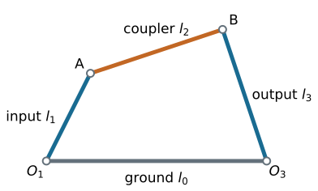
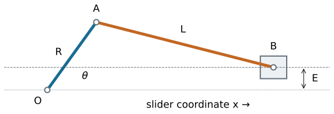

Degrees of Freedom (Mobility)
Kinematics and Machine Dynamics · Chapter 2
Chapter overview
- Count the motions of a free rigid body.
- Translate joints into constraints.
- Estimate mobility for planar and spatial mechanisms.
- Recognize dependent constraints and singular configurations.
Source: Satici, compiled Kinematics and Machine Dynamics notes (Fall 2020), Chapter 2, pp. 5–6; supporting Lecture01 slides. Original worked examples and clarifications are documented in _planning/remaining-chapters-coverage.md.
What mobility measures
The mobility \(M\) is the number of independent configuration parameters needed to locate every link relative to ground.
A free planar rigid body needs \((x,y,\theta)\): three parameters.
A free spatial rigid body needs three translations and three orientation parameters: six parameters locally.
Ground is a link, but contributes no motion parameters.
Source: Satici, compiled Kinematics and Machine Dynamics notes (Fall 2020), Chapter 2, pp. 5–6; supporting Lecture01 slides. Original worked examples and clarifications are documented in _planning/remaining-chapters-coverage.md.
Links, coordinates, and constraints

Four links include ground. Before connecting the moving links, there are \(3(4-1)=9\) planar coordinates.
Source: Satici, compiled Kinematics and Machine Dynamics notes (Fall 2020), Chapter 2, pp. 5–6; supporting Lecture01 slides. Original worked examples and clarifications are documented in _planning/remaining-chapters-coverage.md.
Joint freedoms in space
| Joint | Relative freedom \(f\) | Independent constraints \(6-f\) |
|---|---|---|
| Revolute: rotation about one axis | 1 | 5 |
| Prismatic: translation along one axis | 1 | 5 |
| Helical: coupled rotation and translation | 1 | 5 |
| Cylindrical: independent slide and rotation | 2 | 4 |
| Spherical: three rotations | 3 | 3 |
Source: Satici, compiled Kinematics and Machine Dynamics notes (Fall 2020), Chapter 2, pp. 5–6; supporting Lecture01 slides. Original worked examples and clarifications are documented in _planning/remaining-chapters-coverage.md.
More joint types
A planar joint allows two translations and one rotation: \(f=3\) in space.
A universal joint allows two independent relative rotations: \(f=2\).
A planar cam or gear contact without an imposed no-slip condition usually removes one of the three relative planar freedoms.
Rolling without slip adds a tangential velocity constraint; state that assumption explicitly.
Source: Satici, compiled Kinematics and Machine Dynamics notes (Fall 2020), Chapter 2, pp. 5–6; supporting Lecture01 slides. Original worked examples and clarifications are documented in _planning/remaining-chapters-coverage.md.
Deriving the planar count
For \(n_L\) links including ground and \(n_J\) joints:
\[M_{\mathrm{count}}=3(n_L-1)-\sum_{i=1}^{n_J}(3-f_i).\]
Equivalently,
\[\boxed{M_{\mathrm{count}}=3(n_L-n_J-1)+\sum_i f_i.}\]
This equals mobility when the counted constraints are independent at a regular configuration.
Source: Satici, compiled Kinematics and Machine Dynamics notes (Fall 2020), Chapter 2, pp. 5–6; supporting Lecture01 slides. Original worked examples and clarifications are documented in _planning/remaining-chapters-coverage.md.
Lower and higher pairs
Let \(J_1\) count one-freedom planar joints, such as pins and sliders, and \(J_2\) count two-freedom planar contacts.
\[\boxed{M_{\mathrm{count}}=3(n_L-1)-2J_1-J_2.}\]
A pin joining \(k\) separate links counts as \(k-1\) binary pin joints.
Count a rigid assembly as one link; count all connections to ground.
Source: Satici, compiled Kinematics and Machine Dynamics notes (Fall 2020), Chapter 2, pp. 5–6; supporting Lecture01 slides. Original worked examples and clarifications are documented in _planning/remaining-chapters-coverage.md.
Worked example: a four-bar
There are four links including ground and four revolute joints.
\[M=3(4-1)-2(4)=1.\]
One input angle locally determines the other link positions on a chosen assembly branch.
The count does not identify the branch, allowable input range, or singular positions.
Source: Satici, compiled Kinematics and Machine Dynamics notes (Fall 2020), Chapter 2, pp. 5–6; supporting Lecture01 slides. Original worked examples and clarifications are documented in _planning/remaining-chapters-coverage.md.
Worked example: a slider-crank

Four links; three revolute joints and one prismatic joint:
\[M=3(4-1)-2(3+1)=1.\]
Source: Satici, compiled Kinematics and Machine Dynamics notes (Fall 2020), Chapter 2, pp. 5–6; supporting Lecture01 slides. Original worked examples and clarifications are documented in _planning/remaining-chapters-coverage.md.
Worked example: a cam and follower
Three links: ground, cam, and translating follower.
Two lower pairs: cam-to-ground revolute and follower-to-ground prismatic.
One higher pair: cam-to-follower contact.
\[M=3(3-1)-2(2)-1=1.\]
The contact must remain closed for this model to apply.
Source: Satici, compiled Kinematics and Machine Dynamics notes (Fall 2020), Chapter 2, pp. 5–6; supporting Lecture01 slides. Original worked examples and clarifications are documented in _planning/remaining-chapters-coverage.md.
Spatial mobility
\[\boxed{M_{\mathrm{count}}=6(n_L-1)-\sum_i(6-f_i).}\]
For an open serial chain of six revolute joints, \(n_L=7\) and \(n_J=6\):
\[M=6(7-1)-5(6)=6.\]
Six joint freedoms do not guarantee six independent end-effector velocity directions at every posture.
Source: Satici, compiled Kinematics and Machine Dynamics notes (Fall 2020), Chapter 2, pp. 5–6; supporting Lecture01 slides. Original worked examples and clarifications are documented in _planning/remaining-chapters-coverage.md.
Constraint rank is the deciding quantity
Write the constraints as \(g(q)=0\), with \(N\) unconstrained coordinates.
\[J(q)\dot q=0,\qquad J=\frac{\partial g}{\partial q}.\]
At a regular configuration,
\[\boxed{M=N-\operatorname{rank}J.}\]
Counting equations works only when their gradients are independent.
Source: Satici, compiled Kinematics and Machine Dynamics notes (Fall 2020), Chapter 2, pp. 5–6; supporting Lecture01 slides. Original worked examples and clarifications are documented in _planning/remaining-chapters-coverage.md.
Redundant constraints: a physical example
A rigid door rotates about a hinge axis. Adding a second perfectly coaxial hinge does not remove its rotation.
Treating both hinges as independent spatial revolute joints gives
\[M_{\mathrm{count}}=6-5-5=-4.\]
The actual mobility is one because several constraints are dependent. Negative counts are a reason to inspect geometry, not negative physical freedom.
Source: Satici, compiled Kinematics and Machine Dynamics notes (Fall 2020), Chapter 2, pp. 5–6; supporting Lecture01 slides. Original worked examples and clarifications are documented in _planning/remaining-chapters-coverage.md.
Singular configurations
At a singular posture, \(J\) can lose rank and the instantaneous nullspace can grow.
An extra instantaneous velocity direction need not extend to a finite motion: higher-order constraints can still prevent it.
Distinguish:
- mobility of the regular mechanism;
- instantaneous mobility at a particular posture;
- number of independent actuator inputs.
Source: Satici, compiled Kinematics and Machine Dynamics notes (Fall 2020), Chapter 2, pp. 5–6; supporting Lecture01 slides. Original worked examples and clarifications are documented in _planning/remaining-chapters-coverage.md.
A reliable counting procedure
- Mark ground and identify rigid links.
- Identify every joint and its allowed relative motion.
- Choose planar or spatial coordinates consistently.
- Compute the generic count.
- Inspect special geometry, contact conditions, and singularities.
Source: Satici, compiled Kinematics and Machine Dynamics notes (Fall 2020), Chapter 2, pp. 5–6; supporting Lecture01 slides. Original worked examples and clarifications are documented in _planning/remaining-chapters-coverage.md.
References and next chapter
Satici, Kinematics and Machine Dynamics, Chapter 2, pp. 5–6; Lecture01 mobility slides.
The compiled chapter follows Wilson and Sadler, Kinematics and Dynamics of Machinery.
Next: Chapter 3: Classification of Four-Bar Linkages.
Source: Satici, compiled Kinematics and Machine Dynamics notes (Fall 2020), Chapter 2, pp. 5–6; supporting Lecture01 slides. Original worked examples and clarifications are documented in _planning/remaining-chapters-coverage.md.